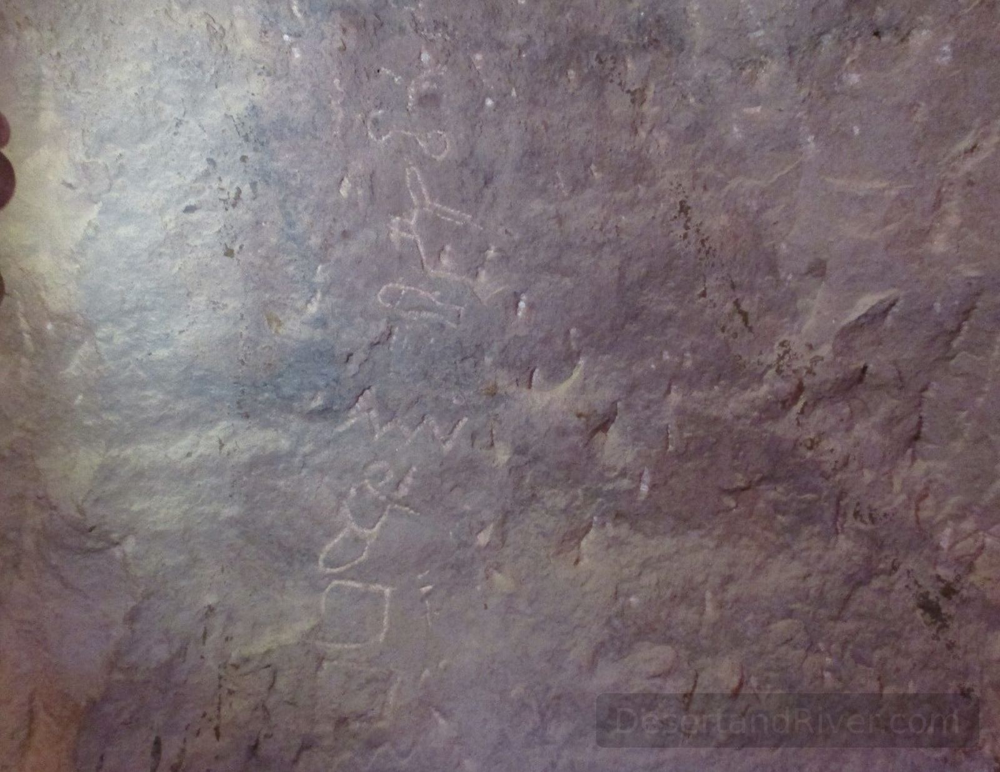
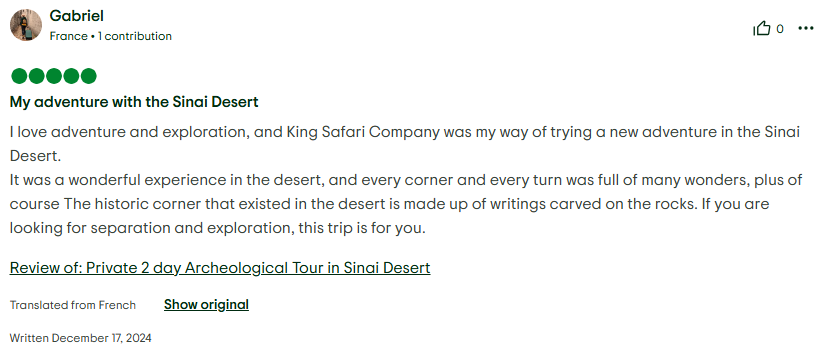

على قمة جبل في جنوب سيناء يقف معبد حتحور، وعلى بعد مسافة مشي قصيرة منه توجد المغارة التي وُجدت فيها أول أبجدية في التاريخ. معظم الشركات تحتاج يومين أو ثلاثة لتأخذك إلى سرابيط الخادم. أما نحن فنزورها في يوم واحد طويل وكامل من دهب، مع مقابر النواميس وصخرة الجمل الخاصة بنا في الطريق. يرافقك جوزيف وآنيت، وتجهز لك الشيف ماري غداءك للجبل.

هنا بدأت حروفنا
قبل نحو 3,800 سنة نقش عمال مناجم الفيروز في سرابيط الخادم رسائل قصيرة على الصخر. أخذوا الهيروغليفية المصرية واستخدموها كحروف للأصوات. هذه الكتابة، السينائية المبكرة، هي الجد الأول لكل الأبجديات تقريبًا في العالم، من العربية والعبرية إلى اليونانية والإنجليزية. اكتشف فلندرز بتري النقوش، وفك رموزها عالم المصريات الإنجليزي آلان جاردنر. في مغارة الطليحة ستقف أمامها مباشرة.

برنامج اليوم
- 06:00: نستقبلك من فندقك في دهب أو من The Hub
- حوالي ساعة: نقود إلى النواميس، مقابر حجرية مستديرة عمرها حوالي 6,000 سنة، أقدم من الأهرامات. نقضي هناك حوالي نصف ساعة
- صخرة الجمل: على الطريق باتجاه سانت كاترين: صخرة كبيرة عليها نقوش نبطية وقبطية ويونانية ورسومات جمال. قليلون يعرفون بوجودها
- حوالي 3 ساعات: نقود إلى سرابيط الخادم
- حوالي ساعة: ومعنا الغداء الذي جهزته الشيف ماري، نصعد إلى معبد حتحور، إلهة الحب و“سيدة الفيروز”. وقت لاستكشاف المعبد والاستمتاع بالمنظر
- نصف ساعة: مشي إلى مغارة الطليحة، مغارة أول أبجدية
- حوالي ساعة ونصف: ننزل من الجبل ونتوقف في رود العير: نقش لزرافة، وهيروغليفية، وحروف سينائية مبكرة، و“هاشتاج” عمره 3,000 سنة نقشه المصريون القدماء
- حوالي 3.5 ساعات: العودة بالسيارة. نحو الساعة 20:00 نوصلك إلى فندقك أو إلى The Hub


كل حرف تقرأه الآن له جد منقوش على صخرة في سرابيط الخادم.
شاهد قبل أن تذهب
سرابيط الخادم: مناجم الفيروز ومعبد حتحور
أول أبجدية: الكتابة السينائية المبكرة في سرابيط الخادم
مقابر النواميس، أقدم من الأهرامات
يشمل
- الاستقبال والتوصيل من فندقك في دهب أو من The Hub
- سيارة دفع رباعي خاصة لمجموعتك
- جميع التصاريح ورسوم البدو
- غداء من إعداد الشيف ماري
- مياه
- مرشداك جوزيف وآنيت
لا يشمل: الفطار والبقشيش والمصاريف الشخصية.
أحضر معك
- جواز السفر (توجد نقاط تفتيش على الطرق الداخلية)
- حذاء جيد للمشي الجبلي
- بنطلون طويل
- قبعة وواقي شمس
هل تناسبك هذه الرحلة؟
تحتاج هذه الرحلة إلى لياقة بدنية جيدة: حوالي ثلاث ساعات مشي، مع صعود حاد إلى المعبد ونزول طويل، بالإضافة إلى حوالي سبع ساعات في السيارة. إذا كنت تفضل إيقاعًا أهدأ، اسألنا عن نسخة اليومين.
السعر
400 يورو للسيارة، من 1 إلى 4 أشخاص
احجز هذه الرحلة
أرسل لنا التاريخ وعدد الأشخاص على واتساب. نؤكد التاريخ ونرسل لك رابط دفع آمن للعربون. والباقي تدفعه في دهب.
احجز عبر واتسابماذا يقول ضيوفنا

الإلغاء
الإلغاء مجاني حتى 3 أيام قبل الرحلة. بعد ذلك يُحتسب سعر الرحلة كاملًا.